# Snapmark brand refresh **What:** a visual refresh of Snapmark's own windows — the screenshot editor, the session window and
the Keyboard Shortcuts window — so the app looks modern and clearly belongs to its logo. Same screens, same controls, same words;
new look. **Owner's words (2026-10-24):** "make it overall appear and look nicer and more modern so it reflects the logo
and brand identity palette and feel", "using codex and creating mockups". **For whom:** a product person or developer
reviewing what an AI agent built overnight. They capture dozens of screenshots on the fly with shortcuts, mark them up (numbered
notes, boxes, arrows, text cards, cut-and-move, red remove / green approve), and hand the session to Claude Code as Markdown.
Benchmarks they know: macOS Screenshot markup, Figma, Xnapper, CleanShot X. **The brand:** the logo is a "beacon": four
rounded viewfinder corners drawn with a cool gradient (#20F4EC cyan → #2492FF blue → #8B3DFF violet) around a rotated rounded square
(a diamond) in a pink gradient (#FA6CFF → #EF28A7). The app icon sets it on a near-black tile (#2C2C31 → #0D0D10, hairline #3B3B42).
Feel: precise, focused, a little electric — a viewfinder that marks one spot. **Fixed, in every direction:** - macOS app (Electron):
native traffic lights, system font (SF Pro) unless the direction argues otherwise, follows light/dark mode. - Remove marks are
always red, approve marks always green; the brand colours must not be confused with them. - The screenshot being marked up stays the
hero; chrome must never compete with it. - Everything is reachable by keyboard; ⌘1–⌘7 pick the seven tools, so the tool order stays.
- The words on the screens stay as they are today (see the reference screenshots). **The axis the three directions differ on: how
loudly the brand speaks.** 1. **Native** — reads as a first-class macOS app; the brand shows only in the accent and a few signature
details. 2. **Branded** — the beacon's gradient and viewfinder corners become the app's visual language (selection, focus,
active tool, headers), on a dark-tile base like the icon. 3. **Signature** — the brand is the experience: bold gradient surfaces,
viewfinder framing of the screenshot, expressive type; the most distinctive, the most risk.
00 Today (v0.11.0)
Open live: —
The app as it is now, captured from the current build, for comparison. Zinc greys and a rose-red accent (#e11d48) that is not
from the logo and clashes with red = remove.
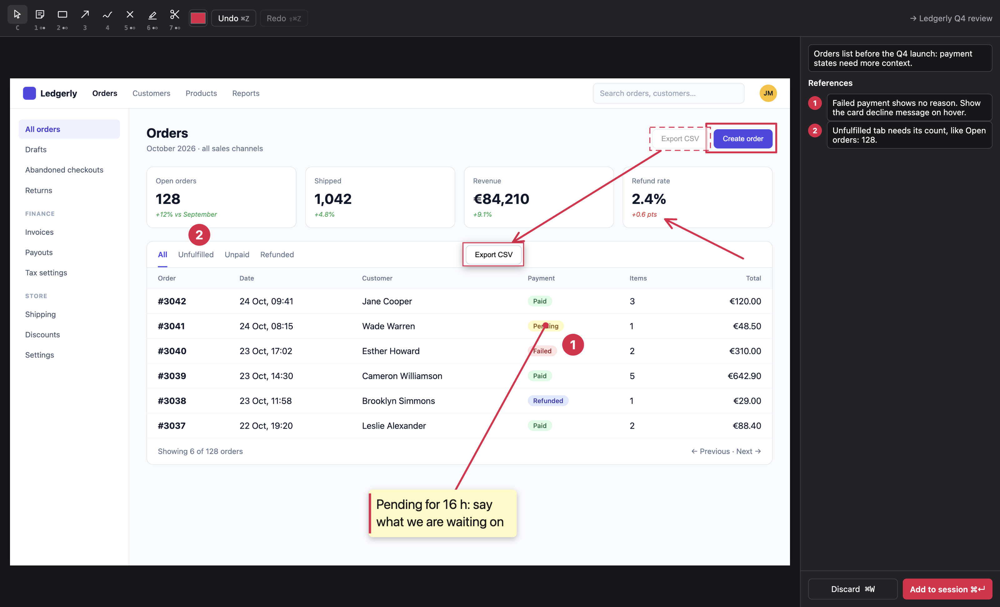
editor--in-use
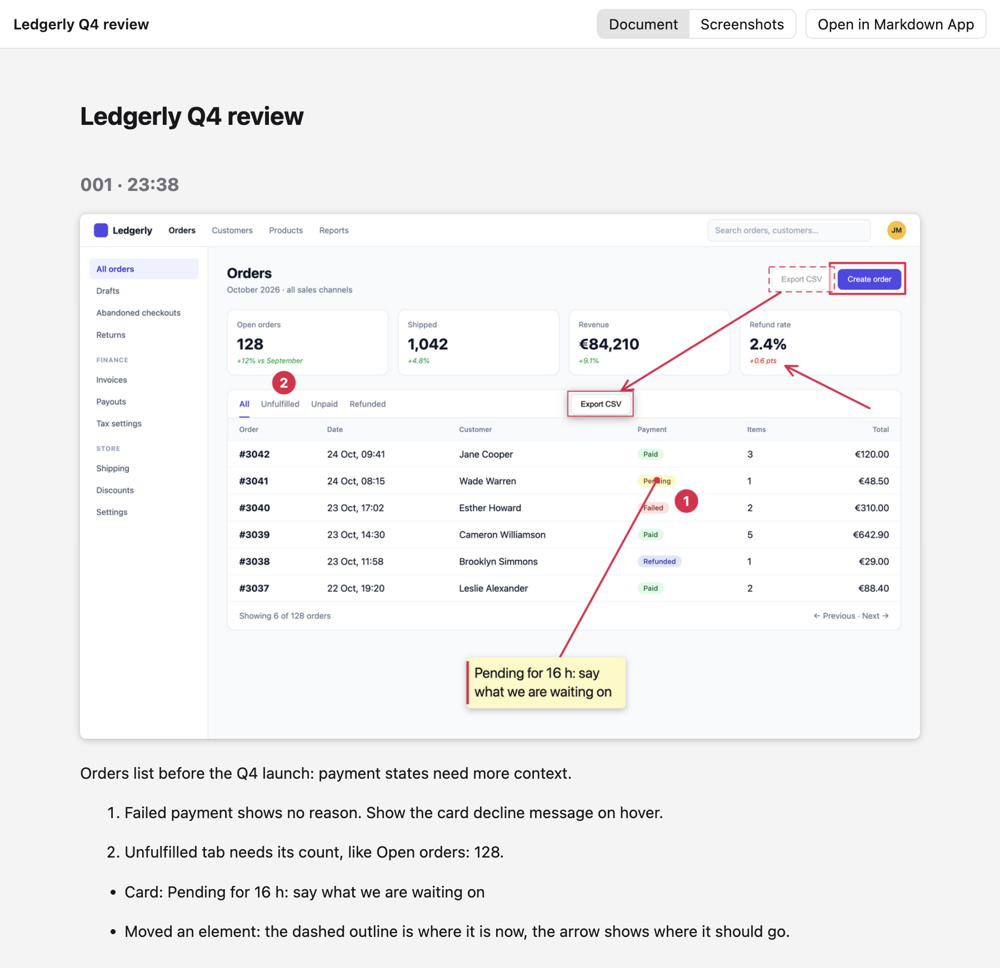
session--document
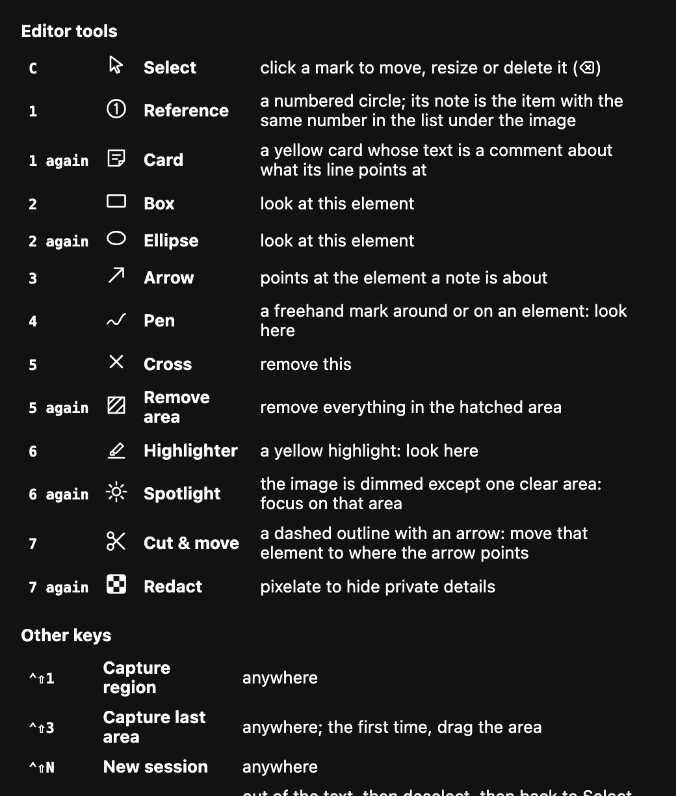
shortcuts--window
01 Native
Open live: —
Light theme. Snapmark feels at home on macOS through translucent toolbar and sidebar materials, SF Pro typography, native
traffic lights, quiet separators, compact controls and soft window shadows. The captured Ledgerly screenshot remains the
editor's focal point. A single beacon blue accents the active tool, primary action and annotations; rounded diamond
reference markers and a small beacon in the title area provide the signature details. The document keeps a continuous reading
column with three inline regional captures and their numbered notes, while the shortcuts window gives the existing tools and
keys an aligned native table treatment.
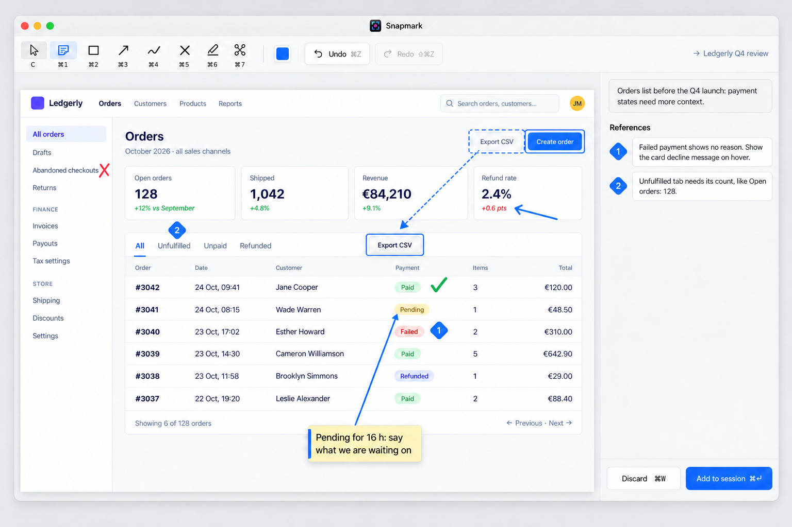
editor--in-use
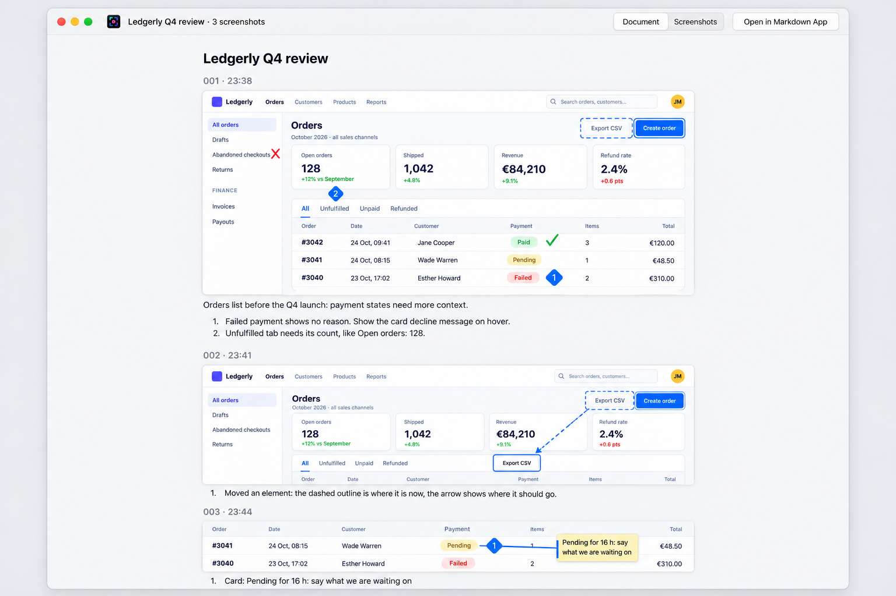
session--document
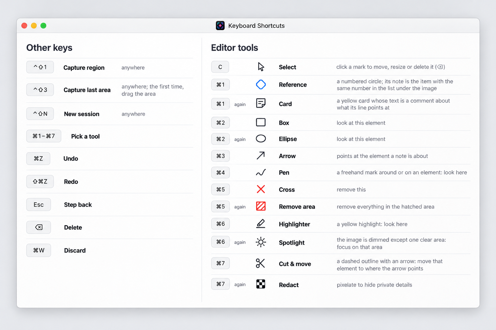
shortcuts--window
02 Branded
Open live: —
Dark theme. The beacon becomes a functional visual language: rounded gradient viewfinder corners frame the captured screenshot
and selected mark, cool gradients identify focus and primary actions, and pink diamonds connect numbered marks to their notes.
Graphite surfaces echo the app icon while SF Pro, native macOS traffic lights and quiet separators keep the interface familiar.
The bright captured page remains the hero across the editor and the session document; the shortcuts window carries the same
framing, typography and keycap treatment.
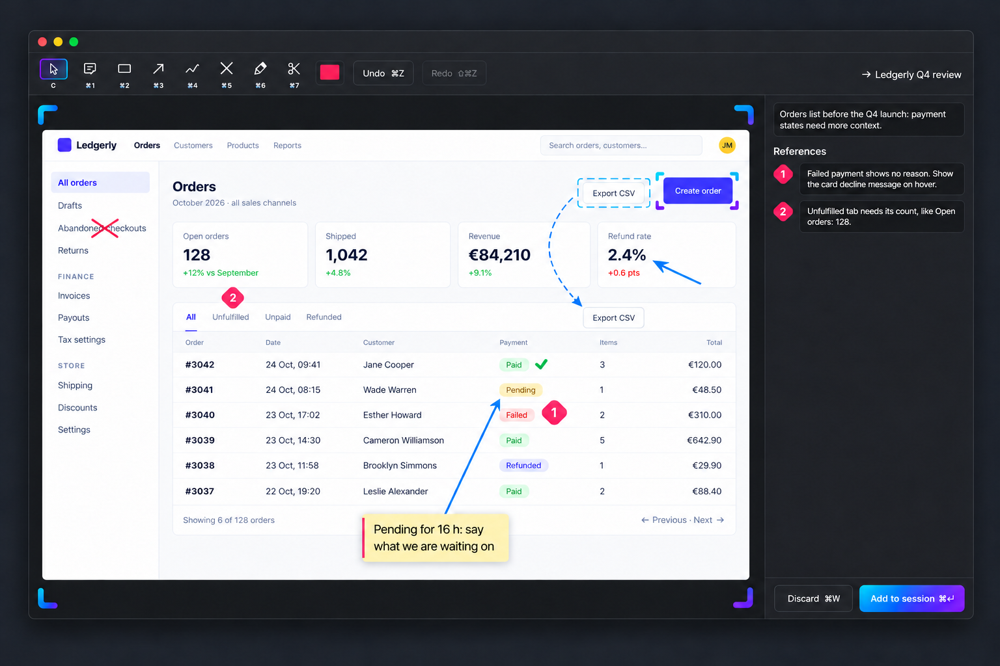
editor--in-use
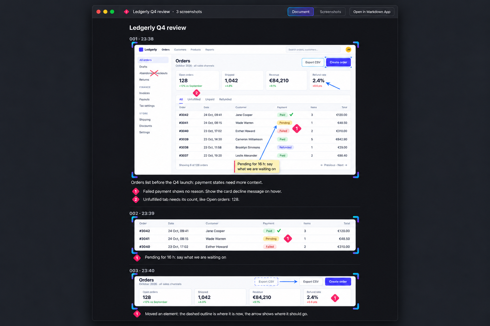
session--document
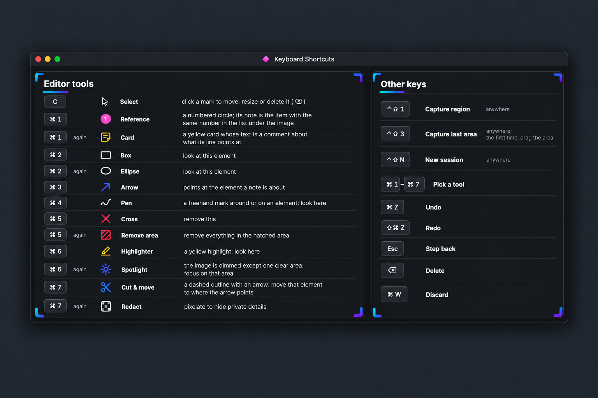
shortcuts--window
03 Signature
Open live: —
Dark theme throughout. Snapmark’s beacon becomes the experience: oversized gradient viewfinder corners hold the bright,
marked-up screenshot on a deep graphite canvas with a subtle electric glow. A floating glass tool pill carries a gradient active
state, glassy reference cards use pink diamond indexes, and confident SF Pro display titles pair with tabular numerals. The same
framing and materials connect the editor, the session document with three inline screenshots, and the keyboard shortcuts window
while preserving their controls and real Ledgerly content.
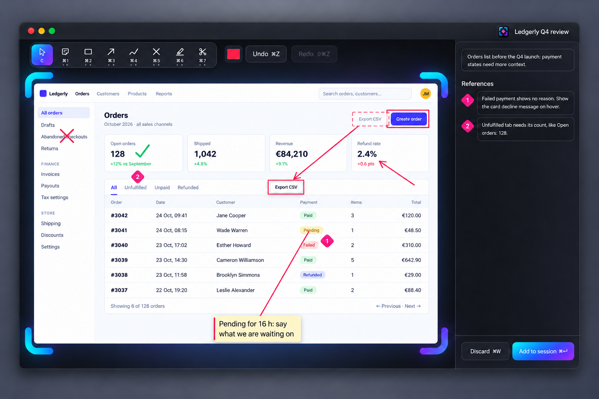
editor--in-use
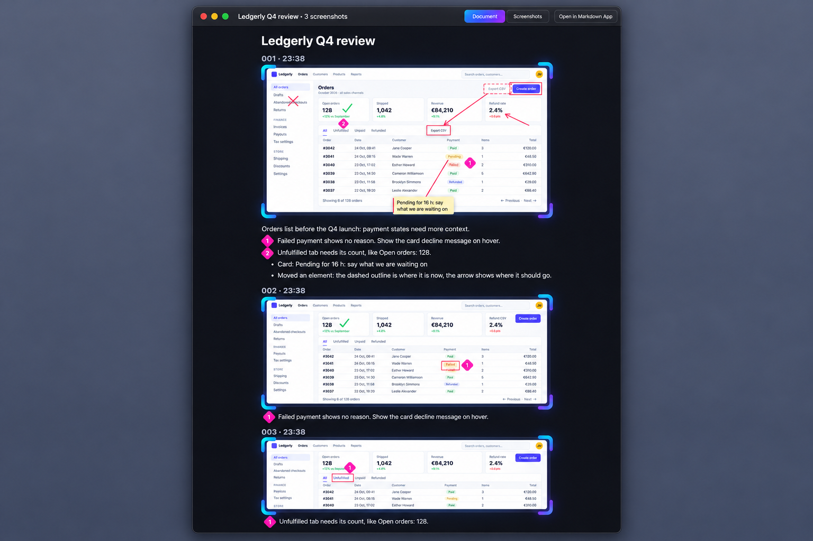
session--document
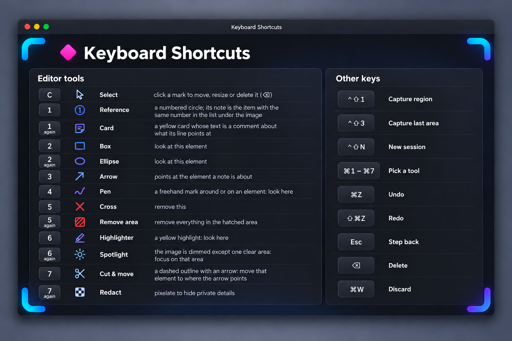
shortcuts--window
Paste it back into the conversation to steer the next round.